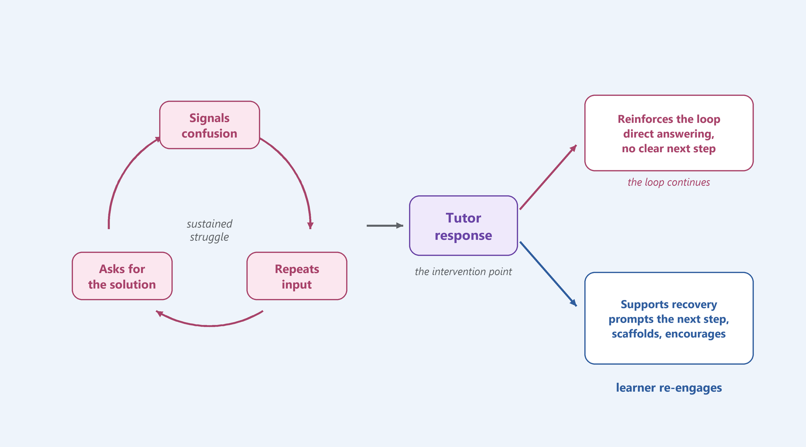

LOCAI: can an LLM read tutoring chats the way people do?
How we built a learning-science codebook, checked it with people, and scaled it to 58,000 AI tutor messages with a local LLM, without trusting the model blindly.
My role I led the research and development. I built the codebook, designed the human review procedure, built the LLM pipeline, and synthesized the results.

The problem
Calculus I is where many students decide whether to stay in STEM. Learnvia's courseware includes an AI tutor for moments when no instructor or classmate is around. But the tutor isn't scripted, so nobody could say when it supported productive struggle and when it quietly did the thinking for the student.
Answering that meant reading what actually happened across 9,787 tutoring conversations. We focused on exchanges with at least four messages, where there was enough back-and-forth to see struggle and recovery. That left about 5,300 conversations and 58,000 messages. That's far too many to code by hand, and the transcripts are protected student records, so they couldn't be sent to a cloud AI service.
The approach
Trust the model only where it agrees with people. People define and test the codes first. The LLM scales them up. Every code is checked against human labels before anything is analyzed.
Build the codebook
Open-code real conversations, then calibrate until people agree.
Build the pipeline
Rewrite each code for a model, and run a local LLM over all 58,000 messages.
Validate every code
Compare the model's labels to a human gold standard, and read where they disagree.
Analyze carefully
Group exchanges into transition states, with checks for who gets which tutor moves.
Synthesize
Turn the patterns that held up into directions for the tutor.
1. Building the codebook
Everything traces back to two ideas from learning science. Productive struggle is effort spent making sense of a problem just beyond reach. Instructional effectiveness is help that builds a learner's thinking instead of replacing it. Each message gets coded on both the good and the bad side.
Productive struggle · learner
Attempts an answer, follows up with a question, works the tutor's feedback into a revision.
Unproductive struggle · learner
Repeats input without revising, signals confusion, asks for the solution.
Instructional effectiveness · tutor
Prompts the next step, breaks the problem down, offers encouragement.
Instructional ineffectiveness · tutor
Gives the answer outright, leaves the next step unclear, ignores the learner's attempt.
We built it in three rounds. Open coding on 125 lines showed what learners and tutors actually do, then calibration and reliability testing on 279 more lines continued until raters agreed.
A simpler codebook was a more reliable one
Initially
Many fine-grained codes, several of them rare. Raters disagreed most on what counted as unhelpful tutoring (agreement 0.43).
What changed
We merged rare codes into broader ones and coded more examples. Agreement rose on every construct and cleared our 0.6 target on all four.
Agreement between human coders
- Instructional effectiveness 0.92 → 0.96
- Productive struggle 0.60 → 0.82
- Unproductive struggle 0.70 → 0.81
- Instructional ineffectiveness 0.43 → 0.67
Show as a table
| Construct | First pass | Second pass |
|---|---|---|
| Instructional effectiveness | 0.92 | 0.96 |
| Productive struggle | 0.60 | 0.82 |
| Unproductive struggle | 0.70 | 0.81 |
| Instructional ineffectiveness | 0.43 | 0.67 |
Agreement is Krippendorff's alpha across raters, on 279 hand-coded lines.
2. Building the pipeline
A codebook written for people isn't precise enough for a model. I rewrote each code as its own document with a tight definition, what does and doesn't count, and invented examples, so no real student text ended up in the prompts.
Privacy by design
The transcripts never left our machines. I built the pipeline around a local open model instead of a cloud service, which also meant designing for a slower, smaller model. Requests run in parallel batches, and every result is saved as it finishes, so a multi-day run can pick up where it stopped.
One question at a time
Initially
The model applied the whole codebook to each conversation at once, the way a person would. With this many codes, it was too slow for thousands of conversations.
What changed
Each call asks one yes-or-no question about one code. It's faster, more accurate, and much easier to check and fix when a code goes wrong.
Behaviors with a fixed wording, like the tutor switching to step-by-step mode, are checked with exact text matching instead of the model.
3. Validating every code
I compared the model's labels with a human gold standard of about 130 messages each for learner and tutor codes, and refined the codes until agreement was substantial.
Reading disagreements, not just scores
Initially
The model's first runs agreed with humans only weakly on some codes (as low as 0.20). Tuning the prompts alone wasn't going to explain why.
What changed
I read the cases where the model and humans disagreed, one by one. That surfaced three hidden problems that no score pointed to.
- A silent failure. The model's hidden reasoning used up its length limit, so about 10% of answers came back empty and were counted as "no." Fixing it also made each message 10 times faster.
- Mislabeled speakers. The tutor prompts presented every message as if the student had written it.
- A biased instruction. "When in doubt, lean toward yes" had been added to fix low recall that the first bug actually caused. Replacing it with "apply the criteria exactly as written" improved precision on every learner code.
Fixing the codes themselves
Some disagreements were the codebook's fault, not the model's. I split codes that mixed several behaviors into single-behavior codes, and reconciled about 70 gold labels where identical messages had been coded both ways. Two tutor codes never became reliable. One overlapped with the learner codes, and the other had too fuzzy a boundary. We dropped them instead of reporting numbers we couldn't trust.
In the end, every code we kept reached substantial agreement with people. But agreement wasn't the whole story.
Key insight from validation
A good score can hide a real error.
"Asks for the solution" agreed with people at 0.87, yet the model sometimes coded a student stating a solution as asking for one, in roughly 5–10% of its positive labels. The gold standard had only 11 examples of that code, so the error was invisible to the statistics. I caught it by reading examples. Scores tell you where to look, and reading tells you what's wrong.
Learner codes
- Asks for the solution 0.66 → 0.87
- Repeats input without revising 0.34 → 0.73
- Signals lack of understanding 0.20 → 0.71
- Asks a follow-up question 0.44 → 0.71
- Engages with tutor feedback 0.59 → 0.67
Show learner codes as a table
| Learner code | First run | Final run |
|---|---|---|
| Asks for the solution | 0.66 | 0.87 |
| Repeats input without revising | 0.34 | 0.73 |
| Signals lack of understanding | 0.20 | 0.71 |
| Asks a follow-up question | 0.44 | 0.71 |
| Engages with tutor feedback | 0.59 | 0.67 |
Tutor codes
- Switches to step-by-step mode rule-based · 1.00
- Offers encouragement 0.34 → 0.83
- Gives the answer directly 0.66 → 0.77
- Affirms a correct answer 0.77 → 0.77
- Prompts the learner to engage 0.29 → 0.73
- Reviews rules and concepts 0.17 → 0.67
- Uses a scaffolding strategy 0.30 → 0.66
Show tutor codes as a table
| Tutor code | First run | Final run |
|---|---|---|
| Switches to step-by-step mode | — | 1.00 |
| Offers encouragement | 0.34 | 0.83 |
| Gives the answer directly | 0.66 | 0.77 |
| Affirms a correct answer | 0.77 | 0.77 |
| Prompts the learner to engage | 0.29 | 0.73 |
| Reviews rules and concepts | 0.17 | 0.67 |
| Uses a scaffolding strategy | 0.30 | 0.66 |
Agreement is Cohen's kappa against a human gold standard. "Switches to step-by-step mode" follows a fixed wording, so it's checked with exact text matching instead of the model. Three more tutor codes didn't make it. One stayed exploratory because it had too few examples to score reliably, and two were dropped.
4. Analysis and synthesis
With the corpus coded, I reshaped it into transition states. Each one is a learner message, the tutor's reply, and the learner's next message. Comparing transitions that start in the same place but end differently shows which tutor moves come right before a stuck learner re-engages.
Negative learner message
Tutor response
Negative learner message
Stayed stuck
Negative learner message
Tutor response
Positive learner message
Moved forward
Here's what that looks like with real codes on an example exchange.
Learner
i dont get it
Signals lack of understanding · negative
Pick the tutor's reply
If the tutor prompts a next step
Tutor
No worries, let's take it one step. What do you get when you plug in x = 3?
Prompting to engage · Encouragement
Learner
0/0?
Engaging with tutor · positive
Negative → Positive
If the tutor gives the answer
Tutor
The limit is 6.
Direct answering
Learner
ok whats the answer to the next one
Asking for the solution · negative
Negative → Negative
We tracked three families of transitions, each pairing a stuck start with a "stayed stuck" and a "moved forward" ending.
Engagement
Repeats input → repeats again, or → engages with the tutor.
Asks for the solution → asks again, or → engages.
Engagement fork
Signals confusion → asks for the solution, or → engages with the tutor.
Progression of understanding
Signals confusion → stays confused, or → asks a follow-up question about what the tutor said.
Not fooling ourselves
The obvious comparison would mislead. Tutors don't respond the same way to every student, so a move can look effective just because of who receives it. I added a ladder of checks and reported which patterns survived each one, including the ones that didn't.
- Within-student comparisons. Each learner is compared with their own other moments of struggle, so differences between students can't explain the effect.
- How long they'd been stuck. We checked whether a move still helped before a learner was deeply stuck, not just after.
- The right outcome. On a mastery platform, nearly everyone eventually completes the task, and giving the answer "helps" completion. So we measured re-engagement and transfer to later problems instead.
What we found
Struggling learners sometimes cycled between signaling confusion, repeating an input, and asking for the solution. The tutor's next move was the turning point. Direct answers and unclear next steps kept the loop going, while prompting a next step, scaffolding, and encouragement came before learners re-engaged. We turned this into three directions for the tutor.
Intervene early
Respond at the first sign of confusion, before it turns into repetition or answer-seeking.
Guide without taking over
Offer one manageable next step and hold back the full answer while the learner is still trying.
Support recovery
When a learner stays stuck, pair guidance with encouragement and point out what they already have right.
These are evidence-informed directions, not tested changes. Measuring their effect on learning is future work.
Outcome
Learnvia received four things they can keep using after the project.
- A validated codebook for learner and tutor behavior, with a one-page guide for each code.
- A human review procedure for checking model labels against people.
- A local, privacy-safe pipeline that can re-code new conversations as the tutor changes.
- Evidence-based directions for how the tutor should respond to stuck learners.
Reflection
Evaluating an AI tutor turned out to be a design problem.
The hardest part wasn't running the model. It was defining "good help" clearly enough that people and a model could agree on it, and building a process that made it easy to see when they didn't.
What I'd do next
- Check the final codes on a fresh sample, since the definitions were refined against the same examples they were scored on.
- Test the tutor recommendations in the product and measure their effect on learning, not just on engagement.
- Design a proper interface for reviewing disagreements. Most of this project's insight came from reading cases side by side in spreadsheets. A tool built for that would make the work faster and easier to share.